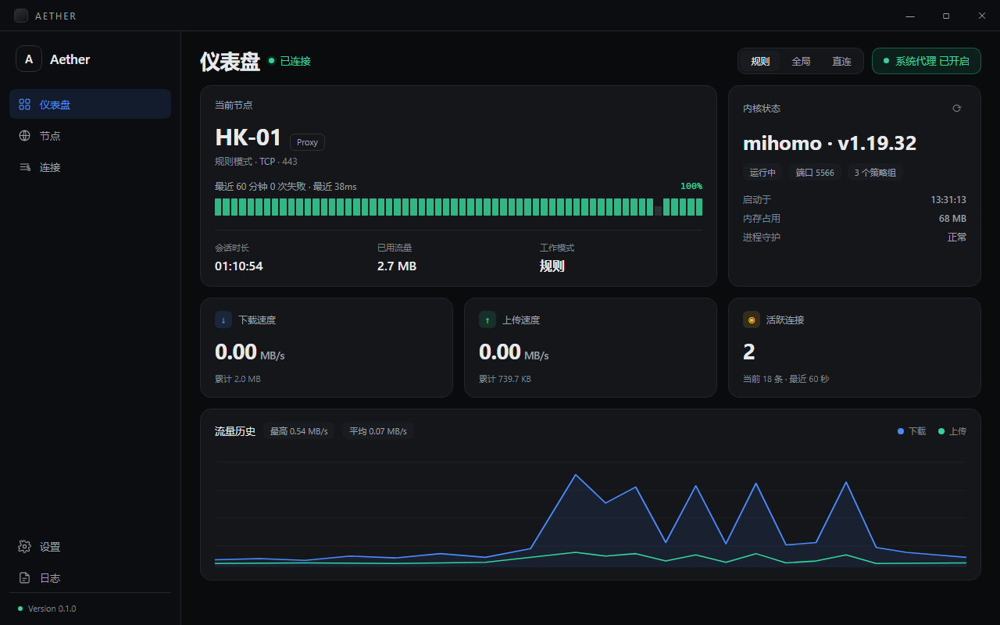
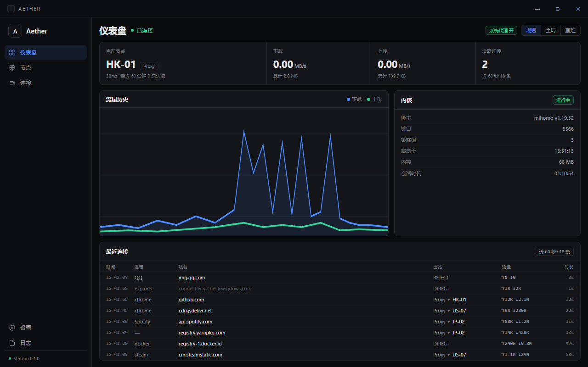
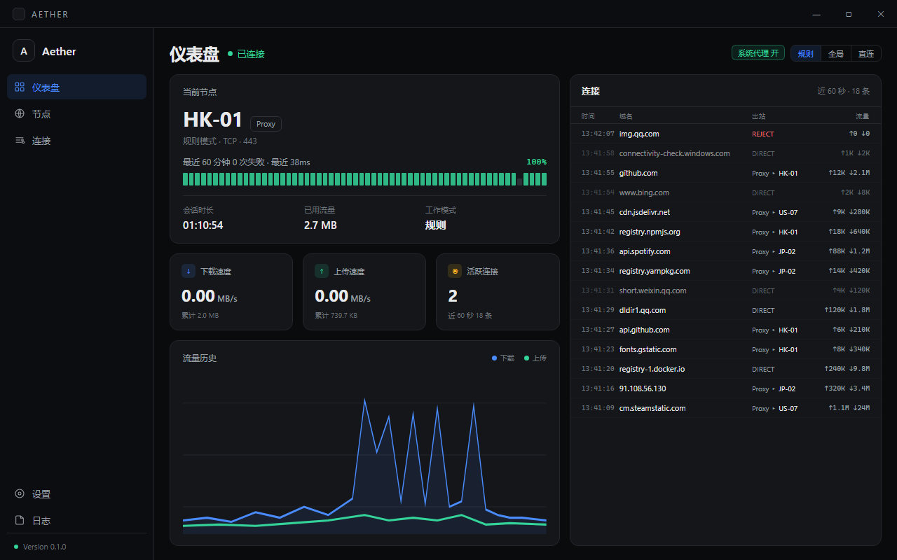
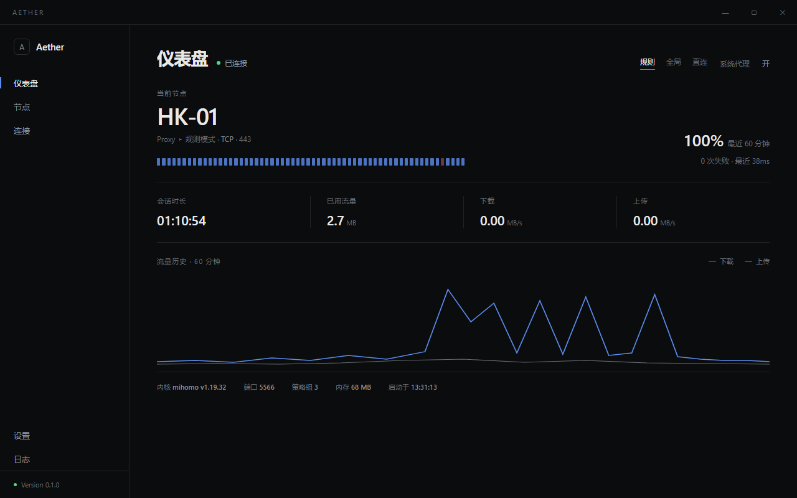

四版都是 1280×800 的静态稿，自包含 HTML，数据为演示数据。点任意一张打开原尺寸页面。差异不只是配色：A/B/C/D 的布局结构、信息密度和首屏重点都不一样。

最接近你给的参考图。上半部两块（当前节点 / 内核），中间三张速率卡，底部折线图。蓝色强调、绿色状态。

同样的壳，但信息更密：顶部一条四格状态条、图表与内核并排、底部直接放最近连接。8px 圆角、12px 正文。

左半是概览（节点、速率、图表），右半是常驻的实时连接流。仪表盘和路由透视同屏，差异点不被藏起来。

去掉卡片与色块，用留白和发丝线分区；一个强调色只出现在导航标尺和曲线。最接近 Linear 的安静感。